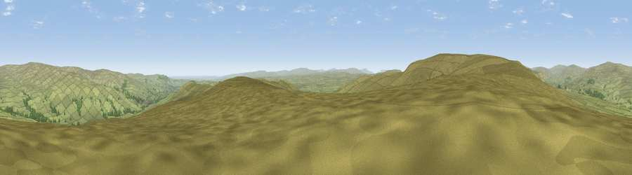

Viewpoint near Newbiggin
#8606 in England · top 18% of its area beats it · near NewbigginThe view, rendered

A 360° render of this exact spot computed from the terrain model, tree cover and land cover — summer colours, afternoon light, calibrated against photographs of famous viewpoints. Real trees, hedges and buildings will differ in detail.
The panorama
Grey silhouette: terrain skyline in each direction (720 bearings, Earth curvature and refraction included). Dashed green: skyline with trees (+15 m) and buildings (+8 m) as obstacles. Blue strip: how far the ground is visible on each bearing.
Where the view opens
Wedge length = distance to the farthest visible ground on that bearing (vegetation-aware). Rings at 10, 25 and 50 km.
What fills the view
96% grassland · 3% woodland ·
Angular shares of the visible panorama (visual magnitude), not map area. Landscape diversity 0.09 (0–1 Shannon).
Key numbers
More beautiful places nearby
The staircase of upgrades: each row has a higher view potential than everything closer. Driving times are estimates from straight-line distance, calibrated against real road routing — check an actual route before setting out.
| Place | Direction | Drive | Score |
|---|---|---|---|
| Viewpoint near Newbiggin | SE · 1 km | ~3 min | 67.1 |
| Viewpoint near Middleton-in-Teesdale | SSE · 3 km | ~7 min | 67.9 |
| Viewpoint near Middleton-in-Teesdale | ESE · 3 km | ~8 min | 70.2 |
| Viewpoint c10501_7697 | W · 5 km | ~10 min | 70.9 |
| Viewpoint c10490_7651 | W · 7 km | ~15 min | 74.4 |
| Mickle Fell | W · 9 km | ~18 min | 75.8 |
| Viewpoint near Eggleston | E · 12 km | ~22 min | 76.0 |
| Great Dun Fell | WNW · 20 km | ~34 min | 77.8 |
54.61892, -2.15986 · source: screening · position refined by local search. Computed location — check access rights before visiting.